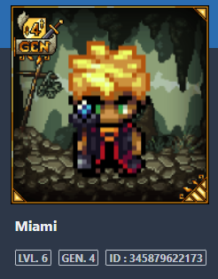
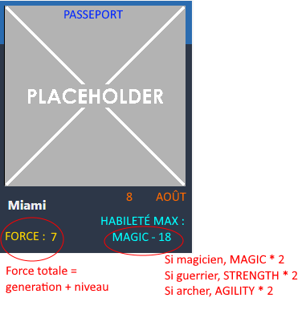
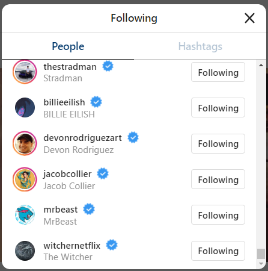

Causerie : Retour sur DTO et cookie
Essayez de répondre aux questions suivantes en utilisant ce que vous avez compris de ces concepts
- Qu'est-ce qu'un DTO ?
- Pourquoi on utilise les DTO ?
- Qui utilise les DTO ?
- Qu'est-ce qu'un cookie ?
- Qui crée et qui utilise le cookie ?
- Est-ce que la gestion des cookies est pareille partout ?
Nous aurons une discussion pour répondre aux questions ci-contre. Le but est de consolider votre compréhension de ces deux concepts clés de programmation.
- Comment sont gérés les cookies avec springboot security ?
- Qu'est-ce que cela amène comme conséquence avec les sessions d'un usager?
- En quoi est-ce différent ou pareil à la procédure utilisée en .net ?
Exercice interactif
En équipe de 3 ou 4, étudiez les mises en situation et formulez une solution potentielle au problème.
Krypt'Eau Raideur
Vous décidez de faire un jeu sur le réseau Ethereum. Sur la blockchain, chaque action coûte un montant (appelé gas). De 5$ à 50$ par transaction (selon l'achalandage). Nul besoin de vous expliquer à quel point vous souhaitez réduire le nombre de transactions. De plus, vous voulez éviter l'envoi inutile de données puisque la taille de la transaction augmente également le coût.
Pour jouer, les participants devront se créer un héro. Voici la classe modèle :
public class hero {
Long id;
String nom;
int generation;
int niveau;
Date dateNaissance;
String race; // orc, elfe, humain
String job; // magicien, archer, guerrier
int strength;
int agility;
int magic;
Date dateEmbauche;
String nomPoste; // explorateur, collecteur, mineur
Float salaire;
Arme monArme;
boolean enQuete;
}
Exercice 1 : Voir le héro
Votre première tâche est de créer le DTO qui permettra d'afficher les informations suivantes. Notez que l'image affichée est aléatoire.
Exercice 2 : Transfer vs View Model
On veut maintenant créer une interface afin d'afficher quelques informations intéressantes. Le designer a fait un brouillon.
Votre deuxième tâche est de créer le(s) DTO(s) qui permettra d'afficher les informations ci-dessus. Réfléchissez à qui devrait s'occuper de faire les calculs, quelles informations le client a besoin, etc.
Exercice 3 : Écrire sur le blockchain
Lorsqu'un joueur se créer un nouveau personnage, vous effectuez les actions suivantes dans votre code :
- Créer le hero avec ses informations de base
- Ajouter une arme au hero (toujours le Wooden Woopa Stick)
- Envoyer le hero en quête
Comment, avec des DTOs, pouvez-vous réduire au maximum le nombre de transactions ?
Insta Groom 
Vous êtes frustré contre le web3 et vous décidez de revenir à ce que vous connaissez : le web 2.0. Vous avez eu une idée de génie : coder un compétiteur à Instagram, mais pour les gens bien groomés uniquement.
Voici votre classe de modèle :
public class profilInstaGroom {
Long id;
String nomUtilisateur;
String alias; // @blabla
String bio;
boolean estVerifie;
TypeCompte monCompte; //business, VIP, normal
Long nombreMedia;
String photoPrincipaleURL;
List<profilInstaGroom> jeFollow;
Feed feedActuel;
int scoreGrooming; //ne peut dépasser 9000
}
Psst ! Je me suis inspirée du vrai Instagram pour le modèle 😉
Exercice 1 : Boss final
On veut afficher la liste de nos comptes favoris, soit tous ceux qu'on follow. Pour chaque compte, on a son nom d'utilisateur, son alias, sa photo et s'il est vérifié.
Écrivez le(s) DTO(s) qui permettra cet affichage.
